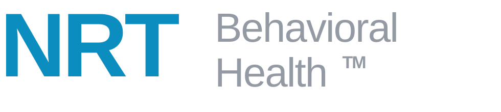
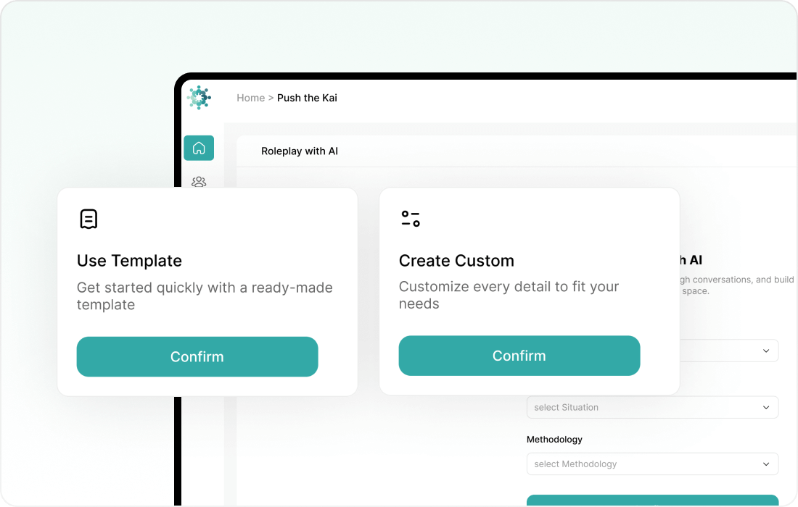
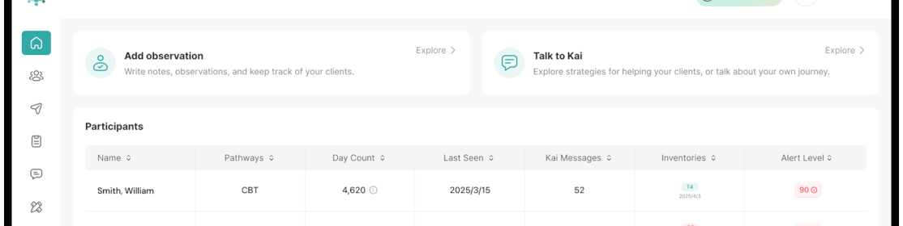

30 / 60 / 90
Days to launch based on the selected deployment path.

AI Training Platform Activation Proposal · April 15, 2026
A denser, more measurable training experience for NRT teams across locations.
This engagement helps NRT move beyond passive, completion-based training by combining structured learning, AI roleplay, an NRT-trained Copilot, and leadership visibility inside the OpenRecovery platform. The result is a launch-ready system where staff can learn, practice, ask questions, and receive support while supervisors gain clearer insight into progress, engagement, and training gaps.
Executive Summary
NRT can launch fast with a standard configuration, tailor the platform with custom roleplays and deeper Copilot support, or step into a fully customized learning experience with broader branding and workflow restructuring. The platform stays flexible while leadership gets a clear path to measurable rollout.


30 / 60 / 90
Days to launch based on the selected deployment path.
3
Core platform layers: learning, Copilot, and visibility.
AI
Roleplay, feedback, and knowledge support inside one system.
$1k+
Monthly per-location entry point with expansion paths.
General Overview Video
How the LMS, AI roleplay, Copilot, and supervisor experience fit together.
Why It Matters
Shows the product foundation NRT can launch on immediately, without waiting for a net-new platform build.
What To Look For
Three Outcomes
The Phase 1 engagement centers on three tightly connected outcomes that improve frontline readiness while giving NRT leadership better coaching visibility.
NRT gets a structured training environment inside OpenRecovery’s LMS where staff move beyond passive modules and actively apply what they learn.
Staff gain faster, more consistent access to approved guidance instead of relying on static documents and repeated supervisor clarification.
Leadership gains a clearer line of sight into learner progress, repeated question themes, and where added coaching or content refinement is needed.
Platform Layer 01 Interactive LMS + Roleplay
OpenRecovery’s LMS framework gives NRT a way to pair lessons, quizzes, simulation, and AI feedback so training becomes more active and measurable.
What We Build
What It Enables

Platform Layer 02 NRT-Trained Copilot
Instead of forcing teams to search through documents or wait for a supervisor response, NRT can give staff a support layer grounded in approved materials.
What We Build
What It Enables
Platform Layer 03 Supervisor Visibility
RecoveryIQ provides NRT with a control-tower view into how staff are moving through training, where they get stuck, and which support topics are surfacing most often.

Deployment Paths
The deployment path determines how much customization NRT wants in Phase 1 and how quickly the initial training environment goes live.
Standard Launch
Timeline: 30 days
$1,000/month/location
Customized Activation
Timeline: 60 days
$10,000 implementation
$2,000/month/location
Fully Customized Learning Experience
Timeline: 90 days
$25,000 one-time build
Custom recurring platform fees
Timeline Note
Extensions caused by stakeholder scheduling delays or delayed content delivery are treated as customer-driven timeline adjustments.
Phase 1 Activation
The objective is to deploy NRT’s first AI-supported training environment using the OpenRecovery LMS, NRT Copilot, roleplay workflows, and reporting structure.
Artifact collection, document review, and alignment on the first training topics to activate.
Copilot setup, NRT grounding, roleplay configuration, and quiz or scoring setup based on the selected path.
Supervisor visibility setup, stakeholder review, testing, and refinement before launch readiness.
Deliver a live NRT training environment, then use Phase 2 to add locations, topics, reporting, and new workflow use cases.
Phase 1 Deliverable
A live NRT training environment that includes interactive learning, Copilot support, and supervisor visibility, with the depth of customization determined by the selected deployment path.
Core Workstreams
Phase 2 Expansion
Phase 2 can extend the foundation across additional locations, more training topics, broader reporting, and additional roleplay or workflow use cases.
Scope, Delivery & Acceptance
Deliverables May Include
Acceptance Criteria
Phase 1 Exclusions
Next Steps
Once NRT selects the preferred path, the implementation team can move directly into setup, grounding, and launch preparation.